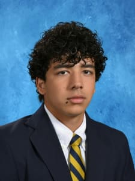
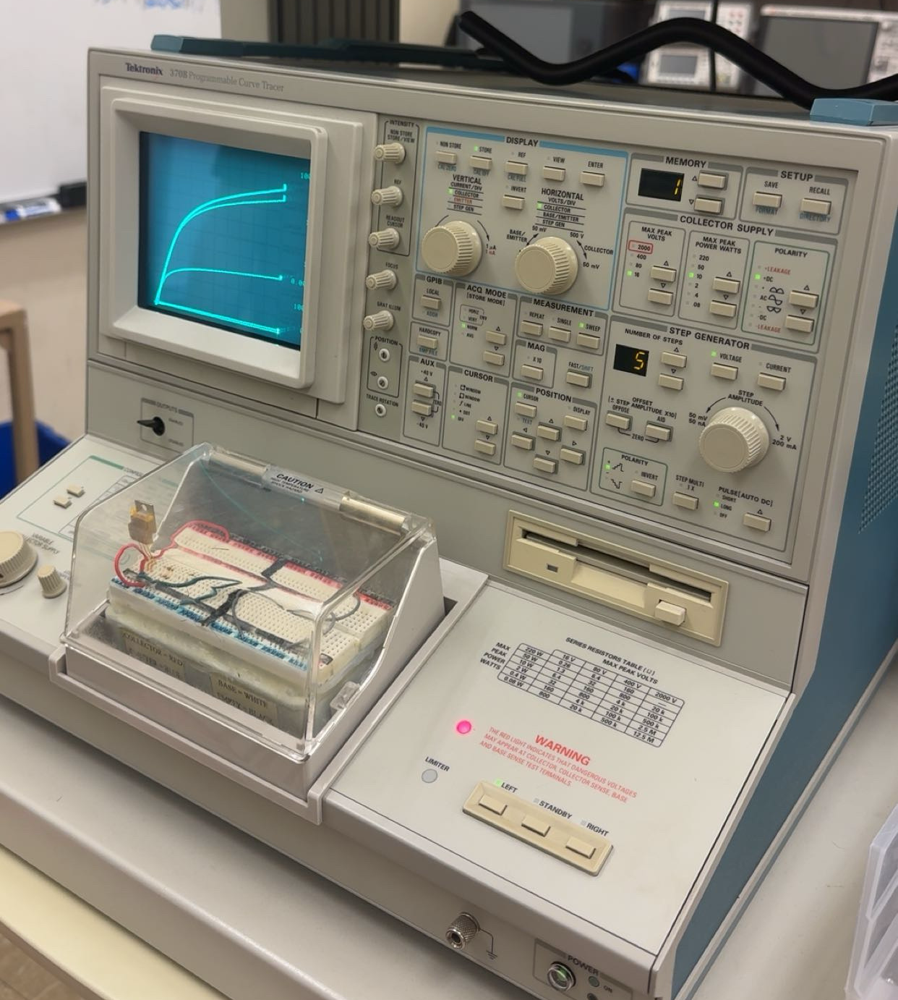
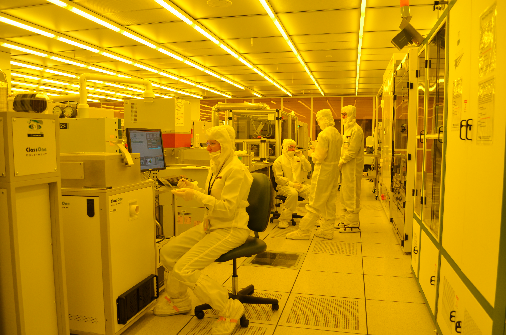

Undergraduate Honors Electrical Engineering student at Georgia Tech — Semiconductor Devices and Chip Design
| Email: | nhaq9@gatech.edu |
| LinkedIn: | linkedin.com/in/navade |
| GitHub: | github.com/navadehaq |
| Location: | Atlanta, Georgia |
I am a first year electrical engineering student at Georgia Tech with interests across the semiconductor spectrum, from materials to architectures. This ePortfolio, designed for my ECE 1100 class, serves as an overview of my professional and academic development. I plan to update this website as I seek internships and research opportunities in semiconductor fabrication, design, and characterization.
In my first year at Georgia Tech, I identified semiconductors as the subfield I wanted to pursue. I began my exploration with devices, joining Dr. William Hunt's Compound Semiconductor Products VIP team, where I have been involved in the characterization of GaN HEMTs (gallium nitride high electron mobility transistors). This experience has sparked my interest in compound semiconductor devices, which I will pursue further this summer at Dr. Nicholas Miller's lab at Michigan State University, performing trap characterization and TCAD simulation of GaN HEMTs. Outside of my GaN research, I have learned more about the equipment and processes involved in fabrication at Georgia Tech's Institute for Matter and Systems cleanroom.
While I primarily have experience in devices, I also have experience on the circuit side. I spent 6 weeks completing the rigorous onboarding process for SiliconJackets, a club at GT focused on chip design from ideation to tape out. I gained experience with industry tools in RTL design, digital verification, and physical design, which provided me with deep insight into the various areas of chip design. After passing through all 3 stages, I chose to join the physical design subteam, as it aligned most with my interests.
I grew up in Ohio, India, China, and Michigan, moving around as my dad pursued different manufacturing related careers. I was able to learn about how global manufacturing and supply chains operate in the automotive space, which proved valuable last summer when I interned as a manufacturing engineer at Yanfeng Automotive Interiors. I hope to bridge my technical background in semiconductors with my internship experience in manufacturing, with the short term goal of gaining a process or yield engineering internship position to cultivate my skillset and deepen my knowledge.

I hope to complete the 4+1 program at Georgia Tech, earning a Master's degree in Electrical and Computer Engineering after my Bachelor's. I then want to work in semiconductor processing for a few years, and then get an MBA and move into management roles.
Steps to get there (Short-Term Goals):
Join a semiconductor lab to gain 2+ years of sustained technical depth and contribute to publications. Remain in one place to immerse myself and gain deep understanding.
Complete a 3-month internship at a major foundry like Intel, TSMC, or GlobalFoundries. Apply cleanroom experience to high-volume manufacturing environments.
Apply for the Electrical and Computer Engineering 4+1 BS/MS program. Must maintain a 3.5+ GPA and get recommendation letters. This accelerates my path to a specialized Master’s degree by one year.
Graduate with Honors in Electrical Engineering and complete the final year of the Master’s degree focusing on semiconductor technology.
After 2-3 years of hands on engineering experience, pursue an MBA to add business experience to my technical knowledge, shifting into management roles.

Georgia Tech SiliconJackets | Spring 2026
Performed digital design, digital verification, and physical design of a 64-bit adder module as onboarding for the SiliconJackets chip design club
Georgia Tech ECE 1100 Discovery Project | Spring 2026
TCAD simulation of Gallium Nitride High Electron Mobility Transistor in preparation for my summer research.
| ECE 2020: Fundamentals of Digital System Design | Computer system and digital design principles. Switch and gate design, Boolean algebra, number systems, arithmetic, storage elements. Datapath, memory organization. Instruction set architecture, assembly language. |
| ECE 2040: Circuit Analysis | Basic concepts of DC and AC circuit theory and analysis. Developed proficiency in nodal and mesh analysis, Thevenin/Norton equivalents, and steady-state sinusoidal analysis. |
| Programming Languages: | Python, MATLAB, R, SystemVerilog |
| Tools: | Cadence Xcelium/Simvision/Innovus, Curve Tracer (IV Characterization) |
| Languages: | English, Urdu, Hindi, French |
Feel free to reach out via email at nhaq9@gatech.edu or connect with me on LinkedIn.